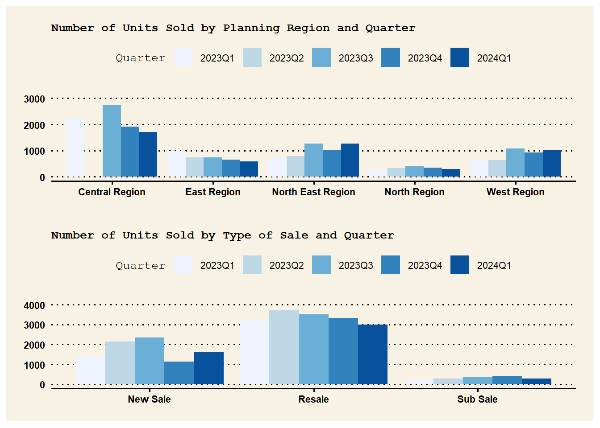

pacman::p_load(tidyverse,patchwork,ggthemes,hrbrthemes)Take-home Exercise 1
Creating Data Visualisation Beyond Default

Photo: Corals at Keppel Bay
1. Overview
1.1 Setting the scene
There are two major residential property market in Singapore, namely public and private housing. Public housing aims to meet the basic need of the general public with monthly household income less than or equal to S$14,000. For families with monthly household income more than S$14,000, they need to turn to the private residential market.
1.2 Task
This exercise aims to analyse REALIS (Real Estate Information System) property data to reveal the private residential market and sub-markets of Singapore for the 1st quarter of 2024.
2. Getting Started
2.1 Installing and loading the required libraries
| Package | Description |
|---|---|
| tidyverse | Used data import, tidying, manipulation, and data visualization. Packages like readr, dplyr, lubridate are part of tidyverse. |
| patchwork | Used to combine individual ggplot into one graphic. |
| ggthemes | Provides ‘ggplot2’ themes and scales that replicate the look of plots by Edward Tufte, Stephen Few, ‘Fivethirtyeight’, ‘The Economist’, ‘Stata’, ‘Excel’, and ‘The Wall Street Journal’, among others. |
| hrbrthemes | A compilation of extra ‘ggplot2’ themes, scales and utilities, including a spell check function for plot label fields and an overall emphasis on typography. |
The code chunk below uses p_load() function from pacman package to check if packages listed are already installed in the computer. The packages are loaded if they are found to be installed. If they are not installed, the function will proceed to install and load them into R environment.
2.2 Importing Data
Below code imports 5 .csv data from REALIS into R environment by utilizing read_csv() function of readr package. readr is part of tidyverse packages.
realis1 <- read_csv("data/ResidentialTransaction20240308160536.csv") #2023 Q1
realis2 <- read_csv("data/ResidentialTransaction20240308160736.csv") #2023 Q2
realis3 <- read_csv("data/ResidentialTransaction20240308161009.csv") #2023 Q3
realis4 <- read_csv("data/ResidentialTransaction20240308161109.csv") #2023 Q4
realis5 <- read_csv("data/ResidentialTransaction20240414220633.csv") #2024 Q12.3 Data Pre-processing
2.3.1 Combining all quarter data into one file
All residential property market data from REALIS by different quarters are merged into one file using rbind().
realis_merge <- rbind(realis1, realis2, realis3, realis4, realis5)2.3.2 Checking for duplicates
realis_merge[duplicated(realis_merge),]# A tibble: 0 × 21
# ℹ 21 variables: Project Name <chr>, Transacted Price ($) <dbl>,
# Area (SQFT) <dbl>, Unit Price ($ PSF) <dbl>, Sale Date <chr>,
# Address <chr>, Type of Sale <chr>, Type of Area <chr>, Area (SQM) <dbl>,
# Unit Price ($ PSM) <dbl>, Nett Price($) <chr>, Property Type <chr>,
# Number of Units <dbl>, Tenure <chr>, Completion Date <chr>,
# Purchaser Address Indicator <chr>, Postal Code <chr>,
# Postal District <chr>, Postal Sector <chr>, Planning Region <chr>, …No duplicated rows are present in the data based on duplicate check above using duplicated() function.
2.3.3 Rename columns for further data visualization
Below glimpse of data set shows the current column name. We can see there are spaces in column name.
glimpse(realis_merge)Rows: 26,806
Columns: 21
$ `Project Name` <chr> "THE REEF AT KING'S DOCK", "URBAN TREASU…
$ `Transacted Price ($)` <dbl> 2317000, 1823500, 1421112, 1258112, 1280…
$ `Area (SQFT)` <dbl> 882.65, 882.65, 1076.40, 1033.34, 871.88…
$ `Unit Price ($ PSF)` <dbl> 2625, 2066, 1320, 1218, 1468, 1767, 1095…
$ `Sale Date` <chr> "01 Jan 2023", "02 Jan 2023", "02 Jan 20…
$ Address <chr> "12 HARBOURFRONT AVENUE #05-32", "205 JA…
$ `Type of Sale` <chr> "New Sale", "New Sale", "New Sale", "New…
$ `Type of Area` <chr> "Strata", "Strata", "Strata", "Strata", …
$ `Area (SQM)` <dbl> 82.0, 82.0, 100.0, 96.0, 81.0, 308.7, 42…
$ `Unit Price ($ PSM)` <dbl> 28256, 22238, 14211, 13105, 15802, 19015…
$ `Nett Price($)` <chr> "-", "-", "-", "-", "-", "-", "-", "-", …
$ `Property Type` <chr> "Condominium", "Condominium", "Executive…
$ `Number of Units` <dbl> 1, 1, 1, 1, 1, 1, 1, 1, 1, 1, 1, 1, 1, 1…
$ Tenure <chr> "99 yrs from 12/01/2021", "Freehold", "9…
$ `Completion Date` <chr> "Uncompleted", "Uncompleted", "Uncomplet…
$ `Purchaser Address Indicator` <chr> "HDB", "Private", "HDB", "HDB", "HDB", "…
$ `Postal Code` <chr> "097996", "419535", "269343", "269294", …
$ `Postal District` <chr> "04", "14", "27", "27", "28", "19", "10"…
$ `Postal Sector` <chr> "09", "41", "26", "26", "79", "54", "27"…
$ `Planning Region` <chr> "Central Region", "East Region", "North …
$ `Planning Area` <chr> "Bukit Merah", "Bedok", "Yishun", "Yishu…Space in column names will create error when used as it is in R code. Hence, replacing them with underscore is necessary. Use gsub() to replace space with underscores and use rename_with() function from dplyr  to rename all the columns with new column names.
to rename all the columns with new column names.
realis_merge <- realis_merge %>%
rename_with(~ gsub(" ", "_", .), everything())Now, we can see that column names are renamed accordingly with underscore in place of space.
glimpse(realis_merge)Rows: 26,806
Columns: 21
$ Project_Name <chr> "THE REEF AT KING'S DOCK", "URBAN TREASURE…
$ `Transacted_Price_($)` <dbl> 2317000, 1823500, 1421112, 1258112, 128000…
$ `Area_(SQFT)` <dbl> 882.65, 882.65, 1076.40, 1033.34, 871.88, …
$ `Unit_Price_($_PSF)` <dbl> 2625, 2066, 1320, 1218, 1468, 1767, 1095, …
$ Sale_Date <chr> "01 Jan 2023", "02 Jan 2023", "02 Jan 2023…
$ Address <chr> "12 HARBOURFRONT AVENUE #05-32", "205 JALA…
$ Type_of_Sale <chr> "New Sale", "New Sale", "New Sale", "New S…
$ Type_of_Area <chr> "Strata", "Strata", "Strata", "Strata", "S…
$ `Area_(SQM)` <dbl> 82.0, 82.0, 100.0, 96.0, 81.0, 308.7, 420.…
$ `Unit_Price_($_PSM)` <dbl> 28256, 22238, 14211, 13105, 15802, 19015, …
$ `Nett_Price($)` <chr> "-", "-", "-", "-", "-", "-", "-", "-", "-…
$ Property_Type <chr> "Condominium", "Condominium", "Executive C…
$ Number_of_Units <dbl> 1, 1, 1, 1, 1, 1, 1, 1, 1, 1, 1, 1, 1, 1, …
$ Tenure <chr> "99 yrs from 12/01/2021", "Freehold", "99 …
$ Completion_Date <chr> "Uncompleted", "Uncompleted", "Uncompleted…
$ Purchaser_Address_Indicator <chr> "HDB", "Private", "HDB", "HDB", "HDB", "Pr…
$ Postal_Code <chr> "097996", "419535", "269343", "269294", "7…
$ Postal_District <chr> "04", "14", "27", "27", "28", "19", "10", …
$ Postal_Sector <chr> "09", "41", "26", "26", "79", "54", "27", …
$ Planning_Region <chr> "Central Region", "East Region", "North Re…
$ Planning_Area <chr> "Bukit Merah", "Bedok", "Yishun", "Yishun"…2.3.4 Create Quarter Column
Use as.Date() function to put Sale_Date column into date object, specify format to ensure as.Date() recognize the content accurately as date. Use year() and quarter() functions from lubridate package to extract year and use paste() to concatenate the strings.
realis_merge$Sale_Date <- as.Date(realis_merge$Sale_Date, format = "%d %b %Y")
realis_merge$Quarter <- paste(year(realis_merge$Sale_Date), "Q", quarter(realis_merge$Sale_Date), sep="")glimpse(realis_merge)Rows: 26,806
Columns: 22
$ Project_Name <chr> "THE REEF AT KING'S DOCK", "URBAN TREASURE…
$ `Transacted_Price_($)` <dbl> 2317000, 1823500, 1421112, 1258112, 128000…
$ `Area_(SQFT)` <dbl> 882.65, 882.65, 1076.40, 1033.34, 871.88, …
$ `Unit_Price_($_PSF)` <dbl> 2625, 2066, 1320, 1218, 1468, 1767, 1095, …
$ Sale_Date <date> 2023-01-01, 2023-01-02, 2023-01-02, 2023-…
$ Address <chr> "12 HARBOURFRONT AVENUE #05-32", "205 JALA…
$ Type_of_Sale <chr> "New Sale", "New Sale", "New Sale", "New S…
$ Type_of_Area <chr> "Strata", "Strata", "Strata", "Strata", "S…
$ `Area_(SQM)` <dbl> 82.0, 82.0, 100.0, 96.0, 81.0, 308.7, 420.…
$ `Unit_Price_($_PSM)` <dbl> 28256, 22238, 14211, 13105, 15802, 19015, …
$ `Nett_Price($)` <chr> "-", "-", "-", "-", "-", "-", "-", "-", "-…
$ Property_Type <chr> "Condominium", "Condominium", "Executive C…
$ Number_of_Units <dbl> 1, 1, 1, 1, 1, 1, 1, 1, 1, 1, 1, 1, 1, 1, …
$ Tenure <chr> "99 yrs from 12/01/2021", "Freehold", "99 …
$ Completion_Date <chr> "Uncompleted", "Uncompleted", "Uncompleted…
$ Purchaser_Address_Indicator <chr> "HDB", "Private", "HDB", "HDB", "HDB", "Pr…
$ Postal_Code <chr> "097996", "419535", "269343", "269294", "7…
$ Postal_District <chr> "04", "14", "27", "27", "28", "19", "10", …
$ Postal_Sector <chr> "09", "41", "26", "26", "79", "54", "27", …
$ Planning_Region <chr> "Central Region", "East Region", "North Re…
$ Planning_Area <chr> "Bukit Merah", "Bedok", "Yishun", "Yishun"…
$ Quarter <chr> "2023Q1", "2023Q1", "2023Q1", "2023Q1", "2…3. Data Visualization
3.1 Data Visualization 1
Data manipulation is done by dplyr functions. To get Number of Units Sold by Property Type and Quarter, use group_by() to group merged REALIS data into by Property Type and Quarter, then use summarise() to get data frame containing total number of units sold for each group. sum() is used to calculate total number of units sold for each group. To get Overall Number of Units Sold by Quarter, use group_by() to group merged REALIS data into by Quarter, then use summarise() to get data frame containing total number of units sold for each quarter. sum() is used to calculate total number of units sold for each quarter.
Use ggplot() and geom_bar() from ggplot2 to plot:
Overall Number of Units Sold by Quarter
Number of Units Sold by Property Type and Quarter
More functions from ggplot2 are used: ylim() and labs() functions from ggplot2 are used to set axis limit and chart title accordingly. Use theme() to set text size of chart title, axis text, legend text and legend title. scale_x_discrete() and guide_axis() are used to avoid overlapping X axis texts. scale_fill_brewer() is used to color the bars. Use ggplot2 extension called patchwork to combine separate ggplot2 graphs into a single figure. Use theme_wsj() from ggtheme to set Wall Street Journal theme.
# Get number of units sold for each combination of Property_Type and Quarter
trans_per_prop_quarter <- realis_merge %>%
group_by(Property_Type, Quarter) %>%
summarise(Total_Number_of_Units = sum(Number_of_Units, na.rm = TRUE), .groups = 'drop')
# Plot the bar chart for Number of Units Sold by Property Type and Quarter
p1 <- ggplot(trans_per_prop_quarter, aes(x = Property_Type, y = Total_Number_of_Units, fill = Quarter)) +
geom_bar(stat = "identity", position = "dodge") +
labs(x = "Property Type", #excluded from display for simplicity
y = "No. of Units Sold", #excluded from display for simplicity
title = "Number of Units Sold by Property Type and Quarter")+
ylim(0,3200) +
theme_wsj()+
theme(plot.title = element_text(size = rel(0.4)),
axis.text.x = element_text(size = rel(0.7)),
axis.text.y = element_text(size = rel(0.7)),
legend.text = element_text(size = rel(0.7)),
legend.title = element_text(size = rel(0.4))) +
scale_x_discrete(guide = guide_axis(n.dodge = 2)) +
scale_fill_brewer(palette = "Blues")
# Get overall Number of units sold per quarter
units_by_quarter <- realis_merge %>%
group_by(Quarter) %>%
summarise(Total_Units = sum(Number_of_Units, na.rm = TRUE), .groups = 'drop')
# Plot overall Number of units sold trend
p2 <- ggplot(units_by_quarter, aes(x = Quarter, y = Total_Units)) +
geom_bar(stat = "identity", fill = "gainsboro") +
labs(
title = "Overall Number of Units Sold by Quarter",
x = "Quarter", #excluded from display for simplicity
y = "No. of Units Sold" #excluded from display for simplicity
) +
ylim(0,8000) +
geom_text(aes(label = Total_Units),
vjust = -0.3,
size = rel(3),
color = "black") +
theme_wsj()+
theme(plot.title = element_text(size = rel(0.4)),
axis.text.x = element_text(size = rel(0.7)),
axis.text.y = element_text(size = rel(0.7)))
# Combine the plots into one
p <- (p2/p1)
p
Insights from Data Visualization 1:
Number of units sold per quarter shows an upward trend from 2023 Q1 to 2023 Q3 but it has since been on downward trend.
There is slight uptick seen in Q1 2024 in number of units sold compared to Q4 2023.
Based on further breakdown by property type and quarter, apartment, condominium and executive condominium make up majority of sales volume followed by terrace house, semi-detached house and detached house.
In Q1 2024, there is a decline in number of apartment and condo units sold while there is a growth in executive condo units sold compared to Q4 2023.
3.2 Data Visualization 2
To get Number of Units Sold by Planning Region and Quarter, use group_by() to group merged REALIS data into by Planning Region and Quarter, then use summarise() to get data frame containing total number of units sold for each group. sum() is used to calculate total number of units sold for each group. To get Number of Units Sold by Type of Sale and Quarter, use group_by() to group merged REALIS data into by Type of Sale and Quarter, then use summarise() to get data frame containing total number of units sold for each group. sum() is used to calculate total number of units sold for each group.
Use ggplot() and geom_bar() from ggplot2 to plot:
Number of Units Sold by Planning Region and Quarter
Number of Units Sold by Type of Sale and Quarter
More functions from ggplot2 are used: ylim() and labs() functions from ggplot2 are used to set axis limit and chart title accordingly. Use theme() to set text size of chart title, axis text, legend text and legend title. scale_fill_brewer() is used to color the bars. Use ggplot2 extension called patchwork to combine separate ggplot2 graphs into a single figure. Use theme_wsj() from ggtheme to set Wall Street Journal theme.

# Get number of units sold for each combination of Planning Region and Quarter
trans_per_reg_quarter <- realis_merge %>%
group_by(Planning_Region, Quarter) %>%
summarise(Total_Number_of_Units = sum(Number_of_Units, na.rm = TRUE), .groups = 'drop')
# Plot the bar chart for Number of Units Sold by Planning Region and Quarter
p3 <- ggplot(trans_per_reg_quarter, aes(x = Planning_Region, y = Total_Number_of_Units, fill = Quarter)) +
geom_bar(stat = "identity", position = "dodge") +
labs(x = "Planning Region", #excluded from display for simplicity
y = "No. of Units Sold", #excluded from display for simplicity
title = "Number of Units Sold by Planning Region and Quarter")+
ylim(0,4200) +
theme_wsj()+
theme(plot.title = element_text(size = rel(0.4)),
axis.text.x = element_text(size = rel(0.7)),
axis.text.y = element_text(size = rel(0.7)),
legend.text = element_text(size = rel(0.7)),
legend.title = element_text(size = rel(0.4))) +
scale_fill_brewer(palette = "Blues")
# Get number of units sold for each combination of Type of Sale and Quarter
trans_per_sale_quarter <- realis_merge %>%
group_by(Type_of_Sale, Quarter) %>%
summarise(Total_Number_of_Units = sum(Number_of_Units, na.rm = TRUE), .groups = 'drop')
# Plot the bar chart for Number of Units Sold by Type of Sale and Quarter
p4 <- ggplot(trans_per_sale_quarter, aes(x = Type_of_Sale, y = Total_Number_of_Units, fill = Quarter)) +
geom_bar(stat = "identity", position = "dodge") +
labs(x = "Type of Sale", #excluded from display for simplicity
y = "No. of Units Sold", #excluded from display for simplicity
title = "Number of Units Sold by Type of Sale and Quarter")+
ylim(0,4200) +
theme_wsj()+
theme(plot.title = element_text(size = rel(0.4)),
axis.text.x = element_text(size = rel(0.7)),
axis.text.y = element_text(size = rel(0.7)),
legend.text = element_text(size = rel(0.7)),
legend.title = element_text(size = rel(0.4))) +
scale_fill_brewer(palette = "Blues")
# Combine the plots into one
pp <- (p3/p4)
pp
Insights from Data Visualization 2
In 2024 Q1, there is decrease in number of unit sold in Central, East and North Regions while an uptick is seen in North East and West Regions.
In terms of type of sale trend, 2024 Q1 Resale and Sub Sale are decreasing while only New sale showed an increasing trend compared to Q4 2023.
3.3 Data Visualization 3
In this visualization, let’s take a look at price trend of the 2 property types with most number of units sold, Apartments and Condominiums. To get condominium and apartment data only, use filter() function from dplyr to filter from realis_merge data. Median data for each quarter is calculated by grouping data into each quarter using group_by(), followed by using median() to compute the median value.
Use ggplot() and geom_boxplot() from ggplot2 to plot boxplot for
Condominium
Apartment
More functions from ggplot2 are used: labs() function is used to set axis limit and chart title accordingly. Use theme() to set text size of chart title and axis text. geom_text() to add median label to box plot. Use theme_wsj() from ggtheme to set Wall Street Journal theme.
### Code for Condominium
# Filter for 'Condominium' in the 'Property_Type' column
condo_data <- realis_merge %>%
filter(Property_Type == "Condominium")
# Calculate median for each Quarter
condo_median <- condo_data %>%
group_by(Quarter) %>%
summarise(median = median(`Unit_Price_($_PSM)`, na.rm = TRUE))
# Create boxplot
ggplot(condo_data, aes(x = Quarter, y = `Unit_Price_($_PSM)`)) +
geom_boxplot(fill = "lightskyblue2") +
geom_text(data = condo_median, aes(x = Quarter, y = median, label = median),
vjust = -0.5, size = 3) +
labs(
title = "Boxplot of Unit Price ($ PSM) by Quarter for Condominiums",
x = "Quarter", #excluded from display for simplicity
y = "Unit Price ($ PSM)" #excluded from display for simplicity
) +
theme_wsj() +
theme(plot.title = element_text(size = rel(0.4)),
axis.text.x = element_text(size = rel(0.7)),
axis.text.y = element_text(size = rel(0.7))) ### Code for Apartment
aprt_data <- realis_merge %>%
filter(Property_Type == "Apartment")
# Calculate median for each Quarter
aprt_median <- aprt_data %>%
group_by(Quarter) %>%
summarise(median = median(`Unit_Price_($_PSM)`, na.rm = TRUE))
# Create boxplot
ggplot(aprt_data, aes(x = Quarter, y = `Unit_Price_($_PSM)`)) +
geom_boxplot(fill = "lightskyblue3") +
geom_text(data = aprt_median, aes(x = Quarter, y = median, label = median),
vjust = -0.5, size = 3) +
labs(
title = "Boxplot of Unit Price ($ PSM) by Quarter for Apartments",
x = "Quarter", #excluded from display for simplicity
y = "Unit Price ($ PSM)" #excluded from display for simplicity
) +
theme_wsj() +
theme(plot.title = element_text(size = rel(0.4)),
axis.text.x = element_text(size = rel(0.7)),
axis.text.y = element_text(size = rel(0.7)))
Insights from Data Visualization 3
Condominium price (Price per squared meter) trend from 2023 Q1 to 2024 Q1 remains relatively flat within the range of S$18125.5 to S$18750.
Condominium prices in 2024 Q1 has increased slightly compared to 2023 Q4 from S$18125.5 to S$18311.
Apartment price (Price per squared meter) trend has shown a downward trend starting from 2023 Q2 to 2023 Q4 although there was an uptrend from 2023 Q1 to 2023 Q2.
Apartment prices in 2024 Q1 has increased slightly compared to 2023 Q4 from S$21916.5 to S$22768.
Slight increase in Condominium and Apartment prices observed here are in line with what is reported in media for Q1 2024 in CNA article.
4. Summary and Conclusion
Number of units sold per quarter shows an upward trend from 2023 Q1 to 2023 Q3 but it has since been on downward trend until slight uptick seen in Q1 2023. Apartment, condominium and executive condominium make up majority of sales volume. Decline in number of apartment and condo (two highest transacted private property types in Singapore) units sale observed for Q1 2024.
In 2024 Q1, there is decrease in number of unit sold in Central, East and North Regions while an uptick is seen in North East and West Regions. 2024 Q1 Resale and Sub Sale are decreasing while only New sale showed an increasing trend compared to Q4 2023.
In comparison to Q4 2023, slight increase in Condominium and Apartment prices are observed which aligns with what is reported in media for Q1 2024.
5. References
HDB resale prices rise 1.7%; private home prices up 1.5% in first quarter: Flash estimates